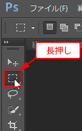
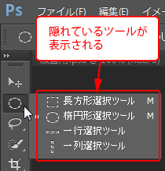
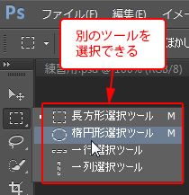
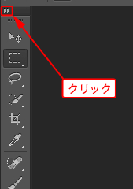
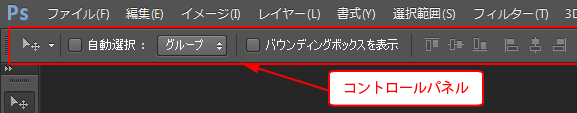
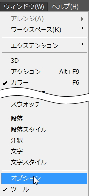
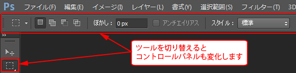

第2章 設定と基本操作
第3節 画面各部の名称
本項では、フォトショップのインターフェースについて学習します。
第1項 ツールパネルとコントロールパネル
この項で学習する内容
- [ツールパネル]と[コントロールパネル]の操作方法を習得する。
ツールパネルの操作
ツールパネルにはさまざまな機能を持ったアイコンが表示されていますが、
ツールパネルのアイコンをよく見ると、右下に小さな三角形の印が表示されているものがあります。
この印があるアイコンをマウスで長押しすると、別のツールが表示されます。
- ツールの切り替え方法
   - ツールパネルの表示切替方法
古いバージョンのフォトショップと同じツールパネルの表示形式（2列表示）に切り替える場合は、
ツールパネル左上の三角ボタンをクリックすることで変更できます。

コントロールパネルの表示とツールパネルとの関係
コントロールパネルとは選択したツールに関する各種設定を行うことができる場所です。
選択したツールによってコントロールパネルの内容は変化します。
メニューバーの下にコントロールパネルが表示されているかを確認しましょう。

※上図は[移動ツール]を選択した状態のコントロールパネルです。
表示されていない場合はメニューバーの[ウィンドウ]-[オプション]を選択して表示させましょう。

ツールをいろいろと切り替えてコントロールパネルの内容が変化することを確認しましょう。

この項のまとめ
- ツールパネルについて
- ・[ツールパネル]とは、各種ツールを格納するパネルのこと。
・ツールアイコン右下に三角印があるものは、アイコンを長押しすることで、他のツールを呼び出すことができる。 - コントロールパネルについて
- ・現在選択中のツールの各種オプション設定ができるパネル。
・選択するツールによって、表示される内容は異なる。
・パネルが表示されない場合は、メニューバーの[ウィンドウ]-[オプション]から再表示可能。
引き続きこのファイルを使用します。
ファイルは閉じずに次の項へ進んでください。